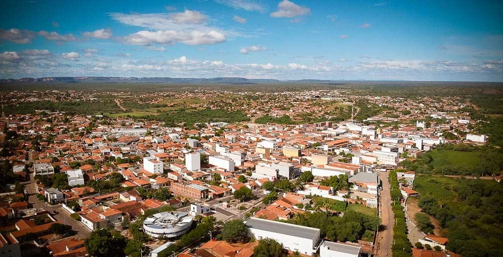
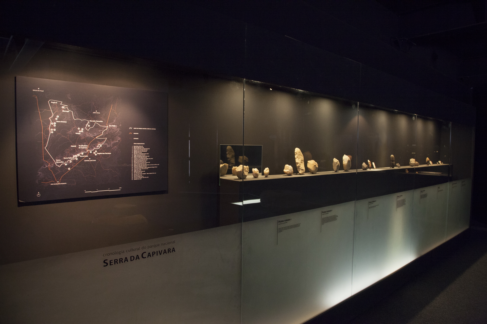
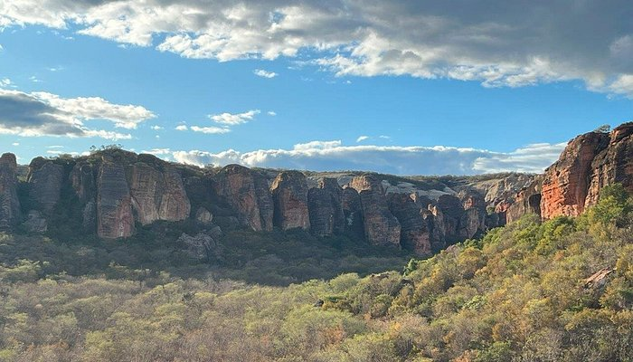
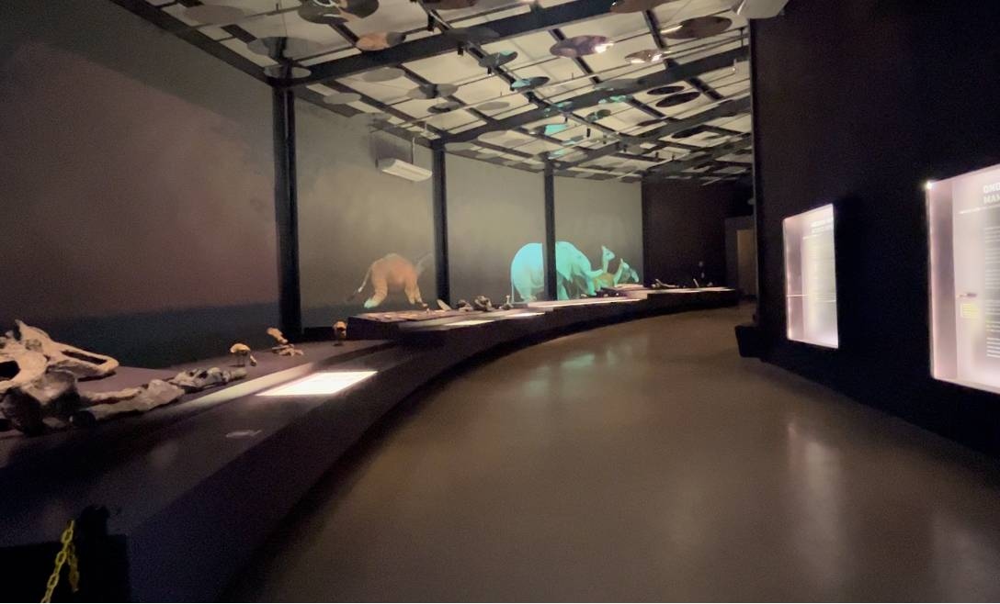

Minha Viagem
Conhecendo a cidade de São Raimundo Nonato

Município no Piauí, Brasil, conhecido por abrigar parte do Parque Nacional da Serra da Capivara, um Património Mundial da UNESCO com importantes sítios de arte rupestre. O município, localizado a 576 km de Teresina, tem como principais atividades a agricultura, a pecuária e os serviços, além de abrigar o Museu do Homem Americano, que exibe as descobertas arqueológicas da região.
Museu do Homem Americano

Situado na sede da Fumdham, o Museu foi criado para divulgar a importância do patrimônio cultural deixado pelos povos pré-históricos na região. A exposição mostra os resultados de mais de quatro décadas de pesquisas realizadas na região do Parque. A exposição permanente se inicia com uma visão da evolução dos hominídeos e a apresentação das teorias de povoamento da América, seguida da vida do Homo sapiens na região durante o Pleistoceno e o Holoceno.
Alto do Cruzeiro

O Morro do Cruzeiro fica num ponto alto de onde se tem uma vista panorâmica privilegiada de São Raimundo Nonato. A cruz no alto do morro possui especial representatividade para a comunidade católica, especialmente no período da Páscoa.
Museu da Natureza

Construído numa região de grande concentração de sítios arqueológicos, o Museu da Natureza propõe ao visitante uma viagem multissensorial, através de uma narrativa apresentada no decorrer da exposição, que mostra a criação do universo e os impactos climáticos nas constantes transformações da fauna e da flora.
Sobre o Parque
O Parque Nacional Serra da Capivara é considerado o berço da história das Américas. Com mais de 1.200 sítios arqueológicos, muitos deles com pinturas rupestres de até 50 mil anos, o local guarda testemunhos únicos da presença humana primitiva no continente.
Além da arqueologia, o Parque protege a caatinga, bioma exclusivamente brasileiro, rico em espécies adaptadas ao clima semiárido.
Nos encontre
Localização
O Parque está localizado no sudeste do Piauí, com sede em São Raimundo Nonato, cidade base para quem deseja explorar a região.
📍 Distância aproximada: 530 km de Teresina (capital do Piauí).
Como chegar
Rodoviário: acesso por estradas a partir de Teresina, Petrolina (PE) e Juazeiro da Bahia.
Aéreo: o Aeroporto Internacional de Petrolina (PE) é o mais próximo, a cerca de 300 km. Em São Raimundo Nonato há também um aeroporto regional em funcionamento.
Infraestrutura
Centros de visitantes: o Museu do Homem Americano e o Centro de Visitantes do Parque são paradas obrigatórias para entender a história e organizar a visita.
Hospedagem e alimentação: hotéis e pousadas em São Raimundo Nonato, além de restaurantes com pratos típicos da culinária nordestina.
Transporte local: agências de turismo e guias credenciados oferecem pacotes e traslados até o Parque.